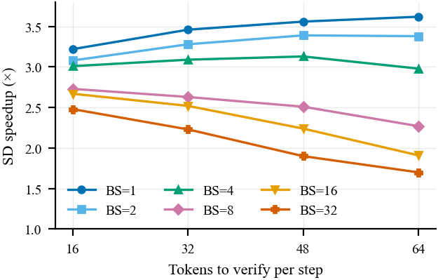
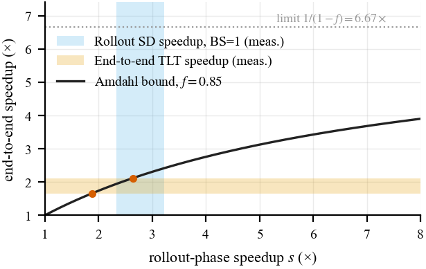

EFigures from the paper
Regenerated from inline, audited data arrays by make_figures_ieee.py.




Independent code audit · LLM training systems
How TLT speeds up reinforcement-learning training of reasoning models by filling idle GPU time with useful work, what the released code actually does, and what an engineering team needs to know to use it.
Reinforcement-learning (RL) post-training of reasoning large language models is bottlenecked by rollout generation, which takes roughly 85% of step time in published measurements and is governed by a few very long responses. TLT (ASPLOS '26) reports 1.7–2.1× end-to-end speedups over VeRL without changing the RL algorithm, by training a draft model on otherwise-idle GPUs and enabling speculative decoding only in the long tail.
This paper is an independent, code-level audit of how those gains arise. It (i) traces eleven claimed mechanisms to file- and line-level locations in the released code and identifies five points where the implementation refines or departs from the published description, most consequentially that online drafter training ships disabled; (ii) executes a unit test of that online training path, which shows that under the pinned software versions the drafter's training forward pass is not causal and lets samples packed into one sequence attend to each other; (iii) re-verifies every reported quantity against the original publication; (iv) builds an assumption-explicit analytical model whose Amdahl bound shows that the measured end-to-end gains imply a 1.9–2.6× rollout-phase acceleration; and (v) distinguishes TLT's systems-level overlap from the algorithmic asynchrony of off-policy RL. The findings are distilled into deployment guidance.
1.86× / 1.79× geomean (H100 / A100) 2.12× peak 11/11 mechanisms located in code 5 implementation–paper divergences 1 executed bug finding 6.7× Amdahl ceiling
IEEE conference format, two columns, 11 pages. If the inline viewer does not load in your browser, use the download button.
Every number and code citation in the paper can be re-checked without trusting the write-up. See the verification folder for instructions and saved outputs.
verify_numbers.pyRecomputes every derived quantity (ratios, geometric means, the Pareto order statistic with a seeded Monte Carlo run, the speculative-decoding model, and the Amdahl bound) and compares each with the printed value.
verify_code_claims.pyChecks every file:line code citation against the fastrl repository at commit bce3df7.
test_drafter_masking.pyRuns fastrl's drafter class the way the online trainer calls it. The forward pass is not causal, and packed samples attend to each other. A positive control on the standard model is causal.
Every quantitative or mechanistic statement in the paper belongs to one of four classes, and the class is stated where it appears.
Reported by the TLT authors; cited with figure or table number.
Verified in the released fastrl source; cited by file and line.
Assumption-based closed forms; never presented as measurements.
Arithmetic or reasoning added in this paper from cited inputs.
Regenerated from inline, audited data arrays by make_figures_ieee.py.

